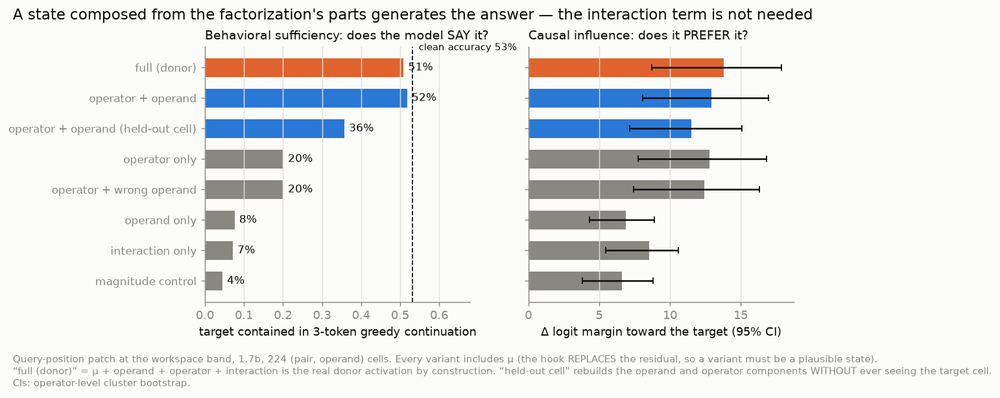
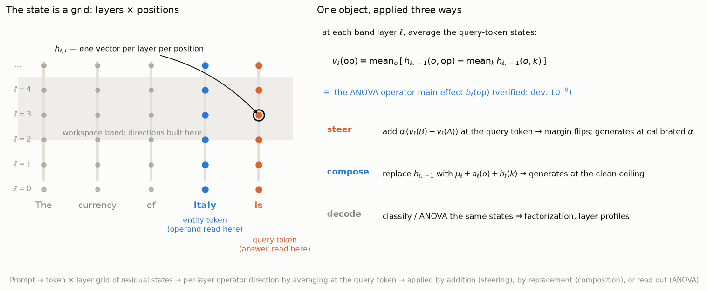
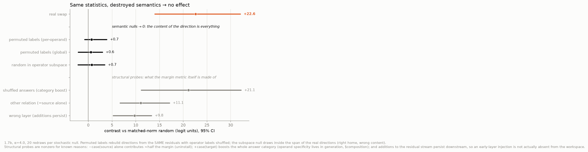
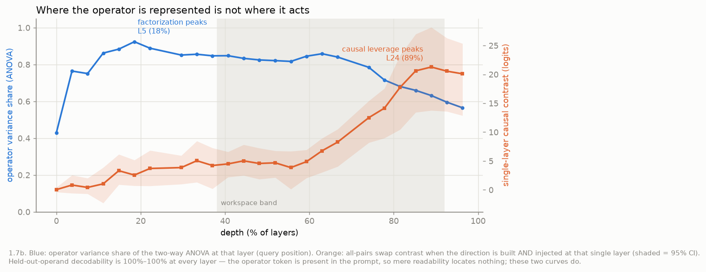

Operator–operand factorization in LLM residual streams: causal influence and compositional sufficiency
Subtitle: three levels of evidence — the relational operator exists as a stable direction, it causally controls the answer margin, and a state composed from the factorization's parts makes the model produce the answer. A closing discussion offers declension as the organizing metaphor.
Download the PDF Interactive explorer
Draft, 2026-07-10. Qwen3-1.7B/8B + Gemma-2-9B. All numbers reproducible from scripts/ and data/; see
"How to reproduce" and the working findings log. An
interactive explorer animates the three central results (declension, injection,
syncretism) and, for readers new to grammatical case, explains the linguistic analogy.
Abstract
How do language models represent a relational operation — currency-of, capital-of — as distinct
from the entity it applies to? We separate three levels of evidence. Representation: a two-way
effects decomposition of the query-position state is ~90% additive in operand and operator across
Qwen3-1.7B/8B and Gemma-2-9B, and the steering vector is identically the decomposition's operator
main effect. Causal influence: adding the operator difference flips the target-vs-source answer
margin for every ordered relation pair in all three models; the decisive nulls — directions rebuilt
under permuted relation labels, and random directions inside the operator subspace — abolish
the effect. Behavioral sufficiency: a per-layer residual trajectory composed from the
decomposition's parts, μ + operand + operator, patched at the query position, makes the model
produce the target answer at its own accuracy level; components built without the target cell still
generate, and swapping the operand component redirects the answer. The interaction term adds nothing
detectable — and the earlier failure of additive steering to generate was a dose artifact: an
out-of-sample-calibrated dose generates at the same level, while overdosing inflates the margin as it
pushes the state off-manifold. The structure generalizes (held-out operands, re-worded prompts, a
second domain), separates the operation from its surface word, and does not emerge for arithmetic or
logic under the identical pipeline.
1. Introduction
When a language model completes "The currency of Italy is—", does it represent currency-of-Italy as one fused thing, or as an entity plus an operation applied to it? This paper argues, causally, for the second reading — and asks the question a claim like that must answer at three separate levels of evidence: representation (does a stable relational direction exist, separable from the operand?), causal influence (does intervening on it systematically move the model's relative preference between answers?), and behavioral sufficiency (can the factorized parts make the model actually produce the target answer?). The levels matter because margin-moving interventions are routinely read as if they controlled behavior. Here that gap becomes the object of study — and resolves: it is a property of how the direction is applied (mode and dose), not of what it contains.
A line of work shows that a task or relation can be captured by a single addable vector in an LLM's residual stream (task vectors, Hendel et al. 2023; function vectors, Todd et al. 2024), that many relations are approximately linear operators (LRE, Hernandez et al. 2024; Merullo et al. 2024), and that recall can be read as function execution over components at different positions (Wang & Xu 2025). What has not been quantified is the joint structure of operator and operand within one prediction state: whether the operation factorizes from its argument there, generalizes, is separable from the word it produces, and suffices to drive generation — and whether any of this holds beyond relational facts. We answer these on Qwen3 and Gemma-2, across a geographic and an animal-taxonomy domain, with arithmetic and logic as the contrast. A closing discussion (§5) offers declension as the organizing metaphor for the asymmetries observed.
2. Related work and what is new here
Extracting relational concepts, and knowledge recall as function execution. The closest prior line is Wang et al. (2024), who locate hidden states expressing a relation separately from its subject and transplant them between subjects — and its successor Wang & Xu (2025), which abstracts recall into a functional structure (subject activations as input argument, relation activations as function body, object activations as return value), verified by patching and counter-knowledge swaps of each component. Our object of study differs in four ways: they localize and exchange components read at different token positions, while we quantify the joint operator × operand decomposition of a single prediction state; we show the steering vector is that decomposition's operator main effect, numerically; we validate against competitive semantic nulls (permuted labels, within-subspace random); and we establish generative sufficiency by additive reconstruction, including components built without the target cell and an out-of-sample dose calibration. Their framing is function execution across positions; ours is state composition at one position — complementary readings of the same recall machinery.
Operation as an addable vector; relation as a linear operator. Task Vectors (Hendel et al., EMNLP 2023) and Function Vectors (Todd et al., ICLR 2024) extract one vector per ICL task and add/patch it (similarly Liu et al., ICML 2024; Turner et al. 2023) — but bundle operator and operand into one unfactored direction, without competitive nulls. LRE (Hernandez et al., ICLR 2024) fits a monolithic affine map per relation. Summing Up the Facts (Chughtai et al. 2024) decomposes recall into additive circuits; ours is a two-way effects decomposition of the residual state itself, with a measured interaction term and a sufficiency test on the components.
Attribute subspaces / reading position. RAVEL (Huang et al., ACL 2024) disentangles multiple attributes of one entity into subspaces (operators sharing an operand); we measure the orthogonal axis, operator vs operand. The operand→operator shift along the sequence restates the subject-enrichment → attribute-extraction dynamics of Geva et al. (EMNLP 2023) in operator/operand terms — our least novel point, included as confirmation.
Global workspace and the Jacobian lens. Gurnee, Sofroniew, Lindsey et al. (2026) introduce the Jacobian lens and identify a mid-depth "global workspace" band. We adopt their depth band as the site of intervention; our contribution is orthogonal — the operator/operand structure of what the band holds — and we report a controlled null on the lens's readout advantage for our task (§4.9).
Arithmetic and logic. LLM arithmetic is reported as a "bag of heuristics" (Nikankin et al. 2025) and Fourier/helical procedures (Nanda et al. 2023; Zhong et al. 2023; Kantamneni & Tegmark 2025), with the operand value cleanly linear (Gurnee & Tegmark 2024); truth is steerable (Marks & Tegmark 2023) and logical-operator heads exist (Hong et al. 2024). No prior work reports a cross-domain operator/operand factorization; we provide one and show where it does not emerge.
What is new here is the combination, not any single ingredient. That relations admit addable vectors and linear decoders, and that recall components can be located and swapped across positions, is established; what has not been done is the joint, quantified analysis at one position: the operator ⊕ operand factorization of the residual state itself, with the steering vector shown to be the ANOVA operator component; the all-pairs swap validated against permuted-label and within-subspace nulls; held-out-operand generalization; the compositional sufficiency test (does a state assembled from the parts generate?) with its dose × position calibration; the operation-vs-realization dissociation; and the cross-domain test (each claim, its evidence, and its decisive control are tabulated at the head of §4). The declension reading is our presentation of these measurements, not an additional empirical claim.
3. Method
Setup. Qwen3-1.7B/8B throughout, plus Gemma-2-9B for the cross-architecture replication (§4.7); all
run in bf16 on a single AMD Strix Halo APU (environment details in the supplementary repository). A relation is rendered into a template; the canonical frame is
"The {op} of {a} is", and §4.5 additionally uses two paraphrase frames (question–answer and
discourse-prefixed) that hold the {op} of {a} unit fixed while varying the surrounding frame, all
ending in is so answer scoring is comparable.
Reading position is the query token unless stated; the depth "workspace" band (38–92% of layers) is where
the J-space paper locates the global workspace and where we build operator directions.
Notation. The model's state is a grid h_{ℓ,t} ∈ R^d: one residual-stream vector per layer ℓ per
token position t; every measurement fixes both indices. Two reading positions recur: the entity
token (the operand's last subword, t = −2 in the canonical frame) and the query token (the final
prompt token, t = −1, where the next-token prediction is read; "query" means reading position, not
attention's Q). Rendering the operator–operand grid through one template gives, at each (ℓ, t), a
family of states h_{ℓ,t}(o, k).
Operator direction ≡ factorization component. For operator k,
v_ℓ(k) = mean_o[ h_{ℓ,−1}(o, k) − mean_{k'} h_{ℓ,−1}(o, k') ] — one direction per layer, built
from the canonical frame only (the cross-frame experiment of §4.5 builds a separate direction per
frame). Layers: ~25 evenly spaced source layers span each model's depth; the 38–92% "workspace" band —
where interventions act — retains 13 of them in every model (exact indices in Appendix A). This
construction is algebraically identical to the operator main effect of the two-way factorization
below
(b_ℓ(k) = mean_o h_{ℓ,−1}(·,k) − μ_ℓ), and we verify the identity numerically (max relative
deviation 8.5×10⁻⁸ across the band). Everything the paper does — steering, composing, decoding —
manipulates this one object; the differences between experiments are differences in how it is
applied, never in what is extracted. We characterize it as a relation-conditioned retrieval
operator — it conditions retrieval on the queried relation; we make no claim about the attention/MLP
circuitry that implements the binding.
Two-way effects decomposition. At a fixed (ℓ, t): h = μ + a(o) + b(k) + e(o, k) — operand main
effect, operator main effect, and interaction (cell residual), every term carrying the (ℓ, t)
indices. The identity is exact because the design is balanced and e is defined as the residual; this
is a descriptive decomposition, not an inferential ANOVA, and with one observation per cell e also
absorbs any cell-specific idiosyncrasy. Variance shares are
SS_a = K·Σ_o‖a(o)‖², SS_b = O·Σ_k‖b(k)‖², SS_e = Σ_{o,k}‖e(o,k)‖², each reported as its fraction of
SS_a + SS_b + SS_e (O operands, K operators). Table 1 uses the mid-workspace layer — layer 17 of 28
(63% depth) at 1.7B, 23 of 36 at 8B, 27 of 42 on Gemma-2-9B — at t = −1 and, as the control,
t = −2.
Swap, positions, and controls. Efficacy of k_A → k_B is the change in
logit(answer_B) − logit(answer_A) at the query position when α·(v(k_B) − v(k_A)) is added — over the
band or a single layer, at all prompt positions or a chosen one (all / query / operand /
sentence-initial control). Beyond the matched-norm random direction, the null battery includes
directions rebuilt under permuted relation labels (per-operand and global — same statistics, no
semantics: the decisive null), random directions inside the operator subspace, the correct direction
at the wrong layer and wrong position, an other-relation direction of matched norm, and
shuffled-answer scoring. Every intervention reports margin change, normalized margin, target rank
before/after, top-1, short-decode containment (§below), on-task KL, and off-task KL on unrelated WikiText —
not flips alone. Answers are scored at their distinguishing first token (bare digit for arithmetic); a
tokenization guard drops, per operator pair, operands whose answers collide there (4 of 12 survive on
the syncretic demonym↔language pairs; all 12 elsewhere).
Composition (behavioral sufficiency). The factorization's component vectors, computed per layer,
are recombined and replace the residual at the query position (μ+operator, μ+operand,
μ+operand+operator, μ+interaction, the full donor, a norm-matched magnitude control) — plus two
loophole-closers: a leave-one-cell-out reconstruction whose components never saw the target cell,
and a wrong-operand composition that should (and does) redirect the answer. Three named generation
readouts, used consistently and never cross-compared: short-decode containment (3-token greedy
continuation contains the gold answer, case-insensitive — the euro, euros, Euro all count; the
model's clean accuracy under the same readout is the ceiling); long-decode classification (k = 8,
each raw generation labeled target / source / wrong-entity / wrong-relation / degraded); and
forced-choice sequence probability (length-normalized log-probability of each gold answer under the
same intervention — immune to article interception and multi-token variants).
Generalization and domains. Build v(op) from half the operands; test the swap on the held-out
half — a genuine operator vs. interpolation among build examples. Domains: five country relations
(currency, capital, language, demonym, continent × 12 countries), an independently curated
animal-taxonomy domain (class, habitat, diet, covering × 12 animals; stable 1-to-1 answers,
tokenizer-screened, three paraphrase frames), and arithmetic / comparison logic as the contrast domains.
Statistical treatment. The ordered swaps are not independent observations: they share operator directions and operands. We report cluster-bootstrap percentile intervals (10,000 replicates) at two levels: within a pair the operand is the resampling unit; across the paradigm the operator is the top-level cluster (a dyadic node bootstrap — resample operators with replacement, weight each pair by its endpoints' multiplicities, resample operands within surviving pairs). Because only five operator clusters exist, we additionally report leave-one-operator-out: dropping any operator leaves the contrast in [+18.8, +25.8] at 1.7B and [+23.3, +28.9] at 8B with flip fraction 1.00 throughout — no single operator carries the paradigm. Composition claims (§4.2) use paired per-cell differences under the same hierarchical bootstrap. Per-operand values are released as long-form artifacts (Appendix A).
J-space controls. We repeat readout-geometry in the J-lens readout unembed(J·h) vs the logit-lens
readout unembed(h), and re-run efficacy with spectrum-matched random-projection and
permuted-vocabulary null lenses (Appendix B).
4. Results
Each experiment below tests one claim against the control that could kill it:
| claim | main evidence | decisive control | scope |
|---|---|---|---|
| a stable operator direction exists | ANOVA ~90% additive; v(op) ≡ main effect (§4.3) |
reading-position control | 9 relations, 3 models |
| it causally controls the margin | all-pairs swaps flip, 3 models (§4.1) | permuted labels → 0; subspace-random → 0 | relative preference |
| the effect is localized | query token ≈ all positions, 60× lower KL (§4.1) | operand / sentence-initial positions ≈ 0 | both Qwen3 scales |
| the operator generalizes | held-out operands; re-framed, re-worded prompts (§4.5) | random ≈ 0; transfer ≈ within | relations + animals |
| the parts suffice to generate | composed patch ≈ donor ≈ ceiling; calibrated steering (§4.2) | leave-one-out; wrong-operand; magnitude; interaction | greedy, this setup |
| the factorization is domain-scoped | animals replicates; arithmetic/logic do not (§4.8) | held-out fails off-relation | our setup (§4.8) |
4.1 Relational operators are causally manipulable — and the effect is localized and label-specific
All 20 ordered operator swaps flip the target-vs-source logit margin while the matched-norm random control is ≈ 0. Under the operator-level cluster bootstrap (§3), the swap−random contrast is +22.6, 95% CI [+14.0, +32.1] at 1.7B, +26.0 [+17.9, +32.8] at 8B, and +30.4 [+23.8, +34.8] on Gemma-2-9B; the flip fraction is 1.00 [1.00, 1.00] in all three. Per-pair operand-bootstrap CIs never cross zero, and the weakest pairs are exactly the syncretic ones (demonym ↔ language, which share their surface form; per-pair distributions in Appendix A).
Where the vector has to land (1.7B, α = 4). Injecting at the query token alone reproduces the all-position effect on the margin (+28.7 [+16.1, +39.8] vs. +28.9 [+16.2, +39.9]) at 60× lower off-task cost (KL 0.29 vs. 18.4 nats/token), and one late layer at the query token brings the target to median rank 69 at near-zero cost (0.04); the operand token and a structurally irrelevant token do essentially nothing (+1.8 / +2.3). Full position × scope battery in Appendix A.
The margin effect is a localized edit of the queried relation — position-specific (sign-correct 98/98/91% for the effective conditions vs. 4–16% for the controls) — not a global perturbation; it replicates at 8B (query-only +32.7 vs. all +33.2, at 63× lower off-task cost).
The label is everything. Directions rebuilt from the same residuals with permuted relation
labels — same statistics, no semantics — abolish the effect: +0.7 [−0.8, +3.9] per-operand, +0.6
global (20 redraws; 8B +0.15 / +0.09 vs. real +26.0). A random direction inside the operator
subspace also does nothing: +0.75 [−2.2, +3.5] (8B +0.43). Three probes stay nonzero for
mechanistically informative reasons and decompose the margin: an other-relation direction keeps
the shared −v(source) and yields ≈ half the effect (+11.1 — uninstalling the source is half the
margin); shuffled-answer scoring still moves (+21.1) because +v(target) boosts the whole answer
category — operand specificity lives in generation, which §4.2 measures; and the wrong (early)
layer retains +9.8 because residual additions persist downstream (locality measured properly in
§4.6; forest plot in Appendix A).
Dose–response, both signs. The effect is a signed causal axis: the operator-specific shift is monotone in α through zero and reverses with the direction — +22.6 at α = +4 vs. −21.0 at α = −4, an almost exact mirror (8B: +26.0 vs. −24.5), saturating at both ends (the positive branch higher, +29 vs. −15 raw, because the clean margin already favors the source: a floor) — while the random control's shift (≈ +6) is flat in |α|, which is why every headline number is a swap − random contrast. Off-task cost grows with dose and breadth (7.9 → 21 nats/token band-wide vs. 0.29 at the query token). What dose does to generation is the subject of §4.2. (Curves in Appendix A.)
4.2 A composed residual trajectory generates the answer
At the default dose, additive steering flips every margin but rarely makes the model say the target answer (0.4–2.2% short-decode containment), whereas replacing the query-position residual with a real donor activation (same operand, target relation) does — 51%, at the model's clean accuracy of 53%. Is the donor carrying something the direction lacks — operand binding, a non-additive interaction, lexical or execution signals? We decompose the donor by the exact factorization and patch partial reconstructions back in. To be precise about the object: what is patched is a per-layer factorized residual trajectory — one reconstructed vector per workspace-band layer, all at the query position — not a single-layer vector (the single-layer variant is reported at the end of this section; every variant includes μ, since the hook replaces the state and a replacement must be a plausible full-magnitude residual). 1.7B, 224 (pair, operand) cells:
| patched state | says target | says source | says other | rank(target), median | top-1 |
|---|---|---|---|---|---|
| magnitude control (μ + norm-matched random) | 4.5% | 33.5% | 0.0% | 696 | 0% |
| interaction only (μ + inter) | 7.1% | 35.3% | 0.0% | 166 | 0% |
| operand only (μ + operand) | 7.6% | 37.5% | 0.0% | 54 | 0% |
| operator only (μ + operator) | 20.1% | 14.7% | 1.8% | 71 | 0% |
| operator + operand (μ + both) | 51.8% | 13.4% | 1.8% | 2 | 31.7% |
| operator + operand, held-out cell | 35.7% | 18.8% | 1.8% | 5 | 17.9% |
| operator + wrong operand | 20.1% | 11.6% | 34.4% | 206 | 0% |
| full donor (μ + both + inter) | 50.9% | 12.5% | 1.8% | 2 | 31.2% |
Two results, stated separately. In-grid reconstruction: the paired per-cell difference composed − donor is +0.9 pp, 95% CI [−6.9, +8.3] at 1.7B (51.8% vs. 50.9%; clean ceiling 53%) and −3.1 pp [−12.5, +5.2] at 8B (62.1% vs. 65.2%; ceiling 68%) — no detectable difference from the donor — and adding the interaction term changes nothing detectable (−0.9 pp [−8.3, +6.9]; interaction alone: 7.1%, near the 4.5% magnitude control). Its components, however, partially saw the target cell. Leave-one-cell-out composition — components built without ever seeing the target cell — is the fully generalizable result: it retains substantial generative sufficiency, 35.7% (8B: 50.4%), though genuinely below the donor (paired −15 pp, CI excluding zero at 8B). Honest limit: with five operator clusters a formal ±5 pp equivalence test is underpowered — "no detectable gap," not certified equivalence. Specificity: a wrong operand's component redirects the answer to that operand (34.4% says-other vs. 1.8% baseline; 8B: 48.2%) — the operator selects the relation, the operand selects whose answer.

What the donor patch carries. Left: does the model SAY the target answer (behavioral sufficiency)? Right: does it prefer it (margin)? The additive composition (blue) matches the real donor (orange); everything else is a control.
Sufficiency by steering, at the calibrated dose. Since v(op) is the operator component (§3),
adding α·(v(B) − v(A)) at the query position of one layer lands, at α = 1, on
μ + operand + operator(B) + interaction(A) — the composed state up to a wrong interaction term. The
dose sweep confirms it behaviorally: generation follows an inverted-U peaked exactly at the
on-manifold dose — 38.4% at α = 1 for a single layer, 51.3% at α ≈ 0.1 for the 13-layer band
(band additions accumulate, so the band's on-manifold dose is ≈ 1/13 per layer; the same peak doses
reproduce at 8B: 45.1% and 56.2%) — while past the peak the margin keeps climbing (+28.9 at α = 4) as
generation collapses. The dose is not tuned post hoc: calibrating α on half the operands and
evaluating frozen on the disjoint half, α is identical in all five partitions (0.1 band, 1.0
single layer), held-out generation at frozen α is 60.8% [56.2, 67.3] (single layer 42.2%), and the
evaluation-optimal dose coincides with the calibrated one in 10/10 splits. The earlier "steering moves
margins but cannot generate" result was an overdose artifact, not an information deficit: the
factorized representation is compositionally sufficient, by replacement and by calibrated
addition. (Single layer: μ + operator alone generates at 44.6% — unpatched layers still carry the
operand.)
The generation audit (Appendix A) closes the metric loopholes directly. Classifying every raw k = 8 generation: the calibrated dose produces the fluent, correct answer (59.4% target vs. 0.9% source; composed patch 57.6% — both at the clean prompt's own 58.5%), while at the overdose 94.6% of generations are degraded token loops by manual inspection — category-correct, fluency-destroyed, not surface variants the metric missed. A forced-choice readout (full-sequence log-prob among the operand's gold answers, under the intervention) then dissociates information from fluency: the target wins at 80.4% even at the overdose (87.5% calibrated, 84.4% donor patch, 2.7% clean). Overdosing destroys the generation manifold, not the encoded preference.
4.3 The representation factorizes into operator ⊕ operand
Does the state literally decompose into "the thing" plus "the question asked about it"? Two-way ANOVA
of h_{ℓ,t}(o, k) at the mid-workspace layer (L17/28 at 1.7B, L23/36 at 8B; §3) — one decomposition
per reading position:
| read position | operand | operator | interaction (cell residual) |
|---|---|---|---|
| query token | 5% / 6% | 86% / 82% | 9% / 13% |
| entity token | 59% / 55% | 31% / 34% | 9% / 11% |
~90% additive; operand and operator components occupy distinct subspaces (principal angles 41–85° at the query token — near-orthogonality is the high-dimensional default, so the load-bearing evidence is the variance split and the causal results). Since the steering vector is numerically this decomposition's operator main effect (§3), the direction that flips margins (§4.1), the component that composes into a generating state (§4.2), and the term that dominates this split are one vector seen three ways. The entity enters operand-dominant and is re-marked by its queried role at the query position (the reading-position control rules out template echo).
(A PCA of the 60 workspace states, showing the operand-organized cloud at the entity token reorganizing into operator clusters at the query token, is in Appendix A.)
4.4 Operation ≠ realization (syncretism)
language-of and demonym-of emit the same word (Italian) yet are distinct operator
directions; the swap between them is weak precisely because they share their output word. An
exponent-free operator marker — "exponent" in the morphological sense: the surface form that
realizes a feature, here the shared answer token — built from the shared-output pairs
(mean[h(language) − h(demonym)], the output word cancelled by construction) still installs the
relation causally (1.7B: −3.6 → +12.5): the operator representation is not an output-word
representation (§5 reads this as syncretism).
(Operator-direction cosines and the exponent-free-marker bar chart are in Appendix A.)
4.5 Operators generalize: held-out operands, prompt frames, wordings — and a second domain
Held-out operands. v(op) built on 6 operands and applied to the 6 held-out still flips 20/20
swaps — a transferable operator, not interpolation: contrast +20.0 [+10.8, +29.5] at 1.7B, +22.8
[+14.0, +31.0] at 8B, flip fraction 1.00 at both. This is not one lucky split: over five shuffled
partitions every pair flips in every partition (contrast range [+20.0, +22.9]; 8B [+22.8, +25.6]), and
full leave-one-country-out gives 220/224 flips at 1.7B and 222/224 at 8B.
Frames and wordings. Across three paraphrase frames, every build→test combination flips — 1.7B 180/180, frame-invariant to two decimals (+22.6 on all test frames); 8B 100/100. Stronger: the direction survives re-lexicalizing the relation itself (currency of → money used in, …) both ways, 40/40 at both scales, transfer ≈ within (+22.59 vs. +22.62). Clean baselines shift; the causal effect does not: it is a property of the relation, not its wording.
A second, non-geographic domain. Every signature replicates on an independently curated animal-taxonomy domain (class / habitat / diet / covering × 12 animals; 1.7B): 12/12 ordered swaps flip (+18.1 [+13.5, +22.8]); held-out operands 12/12 at +18.0 — transfer indistinguishable from within; cross-frame 72/72, again frame-invariant to two decimals; permuted-label and subspace nulls at zero (−0.5 and +0.2, CIs spanning 0); the same reading-position signature (operand 79% at the entity token, operator 62% at the query token); and even the same quantitative margin decomposition (the other-relation probe retains ≈ half the effect in both domains: 47% vs. 49%). Two honest caveats: the animal factorization carries more interaction (22% vs. 9% — informative in §4.8), and the generation-level readout is floor-limited here (the model's own clean greedy accuracy on these multi-token answers is 6%), so in this domain sufficiency is attested by margins and rank, not exact match.
4.6 Where the operator is represented is not where it acts
A per-layer sweep (1.7B; direction built and injected at each single layer) separates three notions the band framing conflates. Trivial readability: a held-out-operand classifier decodes the operator at 100% from every layer including layer 0 — the operator's token is in the prompt; decodability locates nothing. Representation: the operator share peaks early (92% at 19% depth), decaying to 57%. Causal leverage: ≈ 0 early, peaking late (+21.3 at 89% depth ≈ the full band's +22.6). The informative curves peak 70 depth-points apart (8B: 23% vs. 89%): where the operator is most cleanly factorized is not where injecting it most moves the output — being readable, the representation, and causally potent are three different layer profiles of one direction (explains the wrong-layer probe of §4.1; figure in Appendix A).
4.7 Cross-architecture replication (Gemma-2-9B)
The entire pipeline transfers unchanged to Gemma-2-9B — different corpus, tokenizer, and architecture family. Every qualitative signature replicates, with the strongest effects of the three models: all-pairs +30.4 [+23.8, +34.8] (20/20), held-out +26.6 [+20.6, +33.2], operator variance 84.8% with 6.8% interaction (full table in Appendix A). Raw logit units are not comparable across architectures (Gemma-2 soft-caps logits) — compare flip rates and variance shares, which match or exceed Qwen3's: the factorization is not an idiosyncrasy of one family.
4.8 Domain scope: a second retrieval domain replicates; arithmetic and logic do not emerge
If the factorization were an artifact of prompting, it should appear wherever the prompt has the same shape. It does not. Extending the identical pipeline to arithmetic (+, ×, −) and comparison-logic operators, on 1.7B, with the animal domain (§4.5) as the second retrieval column:
| domain | op var | interaction | held-out | swap/rand |
|---|---|---|---|---|
| countries | 86% | 9% | 20/20 | +21 / ~0 |
| animals | 62% | 22% | 12/12 | +19 / +0.7 |
| arithmetic | 55% | 23% | 2/6 (≤rand) | +0.4 / +0.3 |
| logic | 33% | 34% | 2/6 (≤rand) | +1.2 / +0.2 |
The gradient replicates and sharpens at 8B (arithmetic held-out 1/6; logic interaction 45%, held-out 0/6): relational ≫ arithmetic > logic at both scales. The animals row adds the decisive nuance: its interaction share (22%) is essentially arithmetic's (23%), yet its held-out transfer is perfect and arithmetic's is at chance — what separates domains is whether the operator direction transfers, not how much interaction the state carries. This is a domain contrast, strictly scoped: the factorization does not emerge for arithmetic under our models, tokenization, prompts, and intervention procedure — a regime where 1.7B/8B arithmetic competence is itself limited and the operation may be computed distributively or iteratively rather than retrieved. We claim the contrast, not a theorem about algorithmic computation.
Reconciling a contrary report. Christ et al. (2025) find that add-N operators (a fixed addend
N over one number) do generalize. The cuts differ: add-N varies a linear numeric parameter —
effectively an operand on the number line (Gurnee & Tegmark 2024) — while our + × − cut varies the
function. Running both cuts on Qwen3 places add-N between relations and + × − (held-out 5/12 · 6/12),
and its directions are by far the most collinear of the three families (76% of the operator-set variance
on one line — a number line, not a set of operations). Their positive and our negative coexist without
contradiction; the full table is in Appendix A.
4.9 Provenance note
This project began as a replication of the J-space readout claim of Gurnee, Sofroniew, Lindsey et al. 2026, whose "workspace" band we intervene on throughout; under matched controls that readout showed no advantage for our task (Appendix B). Nothing above depends on J-space.
5. Discussion
Modes of intervention, and what a margin measures. What looked like a gap between influencing a preference and executing an operation was a gap between ways of applying the same vector: a large added multiple moves margins while pushing the state off-manifold; a calibrated multiple, or replacement with the composed state, generates at ceiling (§4.2). The null battery likewise decomposes the margin — half uninstalling the source, half installing the target category, operand specificity visible only in generation (§4.1). Both points travel: margin shifts at one fixed dose measure category-level preference under a possibly off-manifold intervention, and negative generation results do not, by themselves, show the information is absent. The three-level discipline — representation, influence, sufficiency, with sufficiency tested by composition — is the transferable method here.
Relational computation as declension. The measurements invite a morphological reading, offered as an organizing metaphor rather than a claim: the same stem takes different endings, the same ending applies across stems (§4.5), two cases share a surface form without being the same case (syncretism, §4.4), stem and ending compose with a small, behaviorally inert residue of fusion (§4.3), and the composed stem-plus-ending is a usable form (§4.2). The limits: unlike morphological case, the marking is continuous, graded, and layer-dependent — a trajectory, not a static affix (§4.6) — and arithmetic and logic do not decline (§4.8). The honest formulation is that entities acquire transient relational configurations partially comparable to grammatical case, not that the model implements a case grammar.
6. Conclusion
An LLM represents a relational operation at three verifiable levels: the operator exists as a stable direction — identically the factorization's operator component; it causally controls the answer margin — every swap flips, localized at the query token, vanishing under permuted labels; and the factorization is behaviorally sufficient — a trajectory composed from its additive parts, no interaction term, makes the model produce the answer at its own accuracy level, by replacement or by calibrated addition. It generalizes to unseen operands, rewordings, a second domain, and a second architecture; it does not emerge for arithmetic or logic under our setup. The gap between shifting a preference and executing an operation, where it appeared, was a property of the intervention, not the representation.
Limitations
Scale and family: 1.7–9B models from two decoder-only families; no ≥30B model; relational linearity holds for a subset of relations even in-domain (cf. LRE ~48%). Sufficiency is scoped: "generates" means short-decode containment (3 tokens) against the model's own clean accuracy as ceiling, on short single-query prompts; composition and dose × position replicate at 8B (§4.2); the leave-one-out composition reaches 36%, not the full-grid 52% — some of the composed state's precision does come from seeing the cell. Coverage: five country + four animal relations, English-only; three context frames and a full re-lexicalization (§4.5); other entity types and languages open. Arithmetic: single-digit regime (BPE), at scales where arithmetic competence is itself limited (§4.8). Reading-position result restates known subject-enrichment → attribute-extraction dynamics. No J-space claim (§4.9, Appendix B).
Appendix A: Reproducibility, stimuli, and implementation details
Checkpoints and hardware. Qwen/Qwen3-1.7B, Qwen/Qwen3-8B, google/gemma-2-9b, all bf16 on a
single AMD Strix Halo APU (128 GB unified memory, ROCm PyTorch). Seeds default to 0 and affect only the
random controls; direction building is deterministic.
Stimuli. Operands (12 countries): Italy, Japan, Russia, China, France, Germany, Brazil, Egypt,
India, Mexico, Sweden, Turkey. Relations: currency, capital, language, demonym ("word for a person
from"), continent; every (country, relation) cell has a gold one-word answer (e.g. Italy → euro, Rome,
Italian, Italian, Europe); the full grid ships in data/relations.json, the lexical reformulations in
data/relations_lex.json, and the paraphrase frames in the dataset metadata.
Answer scoring and selection. Answers are scored at the first token of " " + answer. Within each
ordered operator pair, operands whose two answers collide at that token are dropped (4 of 12 survive on
the syncretic demonym↔language pairs; all 12 elsewhere). Whole-word single-token coverage: 0.92 (Qwen3
BPE), 0.95 (Gemma SentencePiece).
Directions, interventions, and controls. v(op)[layer] is the mean over operand cells — canonical
frame only; the cross-frame experiment (§4.5) builds one direction per frame — of the op's residual
minus that cell's mean over ops. Layer selection: 25 evenly spaced source layers per model, restricted
to the 38–92% workspace band, which retains 13 layers in each model. Exact band indices —
Qwen3-1.7B (28 layers): 11–18, 20–24; Qwen3-8B (36): 14, 16, 17, 18, 20, 21, 23, 24, 26, 27,
28, 30, 31; Gemma-2-9B (42): 17, 18, 20, 22, 23, 25, 27, 28, 30, 32, 33, 35, 37. Interventions add
α · (v(to) − v(from)) at every position of the band (α = 4 unless swept; position-restricted variants
in §4.1). The matched-norm control draws one Gaussian vector per layer and rescales the
band-concatenated stack to exactly the injected difference's norm. Clean mean margins
logit(to) − logit(from) are ≈ −7 to −8 across models and frames; per-operand values for every
experiment are released as long-form artifacts (results/ablation/*_long.parquet).
Method schematic.

The notation h_{ℓ,t} made concrete (§3): every measurement fixes a layer and a position; one object —
the per-layer operator direction — is steered, composed, and decoded.
The animal-taxonomy domain. Operands (12): shark, eagle, frog, snake, bee, whale, owl, lizard, cow,
salmon, penguin, deer. Relations: class, habitat, diet, covering; every cell has a stable 1-to-1 answer
(e.g. shark → fish, ocean, carnivore, scales), screened so all four answers are first-token distinct per
operand (single-token coverage 0.62 — multi-token answers like carnivore depress the greedy ceiling
but not the first-token margin metric); three paraphrase frames mirror the country domain; grid in
data/animals.json, authoring gate in build_op_datasets.py.
The generation audit (full table, §4.2). 1.7B relations, 224 cells/condition, k = 8 greedy, raw texts persisted in the artifact; forced choice = length-normalized sequence log-prob among the operand's gold answers under the same intervention:
| condition | target | source | other | degraded | forced choice |
|---|---|---|---|---|---|
| clean | 3.6% | 58.5% | 1.3% | 36.6% | 2.7% |
| patch composed (μ+operand+operator) | 57.6% | 11.6% | 0.9% | 29.9% | 76.3% |
| patch donor | 57.6% | 9.8% | 0.8% | 31.7% | 84.4% |
| add band α=4 (overdose) | 0.4% | 0.0% | 4.9% | 94.6% | 80.4% |
| add band α=0.1 (calibrated) | 59.4% | 0.9% | 1.3% | 38.4% | 87.5% |
| add one layer, query, α=1 | 40.6% | 21.9% | 2.2% | 35.3% | 76.3% |
Containment classification can also over-count (2–5% of cells contain both target and source — "the Swedish krona" contains demonym-"Swedish" as a modifier); worst-case reclassification moves target rates by ≤ 5 points.
Cross-architecture replication (full table, §4.7).
| measure | Qwen3-1.7B | Qwen3-8B | Gemma-2-9B |
|---|---|---|---|
| all-pairs swap contrast | +22.6 [+14.0, +32.1] | +26.0 [+17.9, +32.8] | +30.4 [+23.8, +34.8] |
| flips (swap > 0) | 20/20 | 20/20 | 20/20 |
| held-out-operand contrast | +20.0 [+10.8, +29.5] | +22.8 [+14.0, +31.0] | +26.6 [+20.6, +33.2] |
| operator variance @ query | 86% | 82% | 84.8% |
| interaction (cell residual) | 9% | 13% | 6.8% |
| exponent-free marker (clean → +v) | −3.6 → +12.5 | −2.9 → +8.1 | −3.0 → +8.5 |
Per-pair distributions.

Every ordered swap, with uncertainty (§4.1). Orange dots = per-operand swap values; gray × = matched-norm random; black bar = operand-bootstrap 95% CI; blue ○ = clean baseline mean.
The position × scope battery (§4.1; 1.7B, α = 4). Ranks are medians, clean baseline 570; n = 224 (pair, operand) cells per condition:
| position, scope | Δmargin [95% CI] | rank(tgt) | says target | sign+ | KL off |
|---|---|---|---|---|---|
| all, band | +28.9 [+16.2, +39.9] | 431 | 0.4% | 98% | 18.4 |
| query, band | +28.7 [+16.1, +39.8] | 368 | 2.2% | 98% | 0.29 |
| query, one layer | +13.7 [+7.7, +18.3] | 69 | 9.8% | 91% | 0.04 |
| operand, band | +1.8 [+1.0, +2.5] | 3194 | 0.4% | 4% | 0.26 |
| wrong (t = 0), band | +2.3 [−0.2, +4.8] | 194 | 3.6% | 16% | 1.56 |
The null battery (full results, 1.7B relations, α = 4). Contrast vs. matched-norm random with operator-level cluster-bootstrap 95% CIs; stochastic nulls pool 20 redraws:
| condition | contrast [95% CI] | flip fraction |
|---|---|---|
| real swap | +22.62 [+14.0, +32.1] | 1.00 |
| permuted labels (per-operand) | +0.68 [−0.8, +3.9] | 0.45 |
| permuted labels (global) | +0.57 [−2.1, +3.0] | 0.35 |
| random in operator subspace | +0.75 [−2.2, +3.5] | 0.45 |
| wrong layer (early band) | +9.77 [+5.2, +13.3] | 1.00 |
| other-relation direction | +11.09 [+6.7, +17.1] | 0.80 |
| shuffled answers | +21.12 [+11.2, +32.2] | 1.00 |

The null battery. Semantic nulls → 0; structural probes decompose what the margin measures (§4.1).

The signed dose curve (§4.1): a signed causal axis, with the off-task cost of the band-wide hook.
![PCA of the 60 workspace vectors H[operand, operator], colored by operator. At the country token the operators intermix (operand-organized, operand 59%); at the query token they separate into clean operator clusters (operator-organized, operator 86%). The faint web links each country's five operator-forms — short at the country token, splayed at the query token. Bottom: the variance split, 1.7B and 8B.](../../figs/op_geometry.png)
Where operand and operator live (§4.3): the same points, organized by operand at the entity token and by operator at the query token.

Operation ≠ realization (§4.4): distinct directions behind an identical output word, and the exponent-free marker that still installs the relation.

Where the operator is represented is not where it acts (§4.6): the factorization peaks early, causal leverage peaks late, and trivial decodability is flat at ceiling.
The add-N comparison (moved from §4.8). Held-out generalization and operator-set collinearity for the three operator families:
| cut | held-out generalization (1.7B / 8B) | operator-set collinearity (top-1 var) |
|---|---|---|
| relations (5 operations) | 20/20 · 20/20 | 0.39 (spread paradigm) |
| add-N (operator = addend) | 5/12 · 6/12 (+0.10 / +0.05) | 0.76 (most 1-D / number-line) |
+ × − (operator = function) |
2/6 · 1/6 (−0.43 / −0.55) | 0.64 |
Qwen3 BPE restricts add-N to single-digit results (5 operands), so its generalization is weak in absolute terms; the claim is the ordering, not the magnitude.
Experiment drivers. op_core.py (directions ≡ ANOVA components, swaps, position-restricted hooks,
metric bundle, cluster bootstraps), operator_paradigm.py, operator_factorize.py,
operator_templates.py, operator_lexical.py, op_dose.py (signed α sweep), op_minimal.py,
op_patch_decomp.py (composition ladder), op_positions.py (position × scope × dose),
op_nulls.py (the battery above), op_layer_sweep.py (decodability vs. causal effect per layer),
op_geometry_dump.py; verify_numbers.py recomputes every number in this paper from the persisted
artifacts.
Appendix B: The J-space readout comparisons
Four readout comparisons on Qwen3-1.7B (8B where noted) asked whether the Jacobian-lens readout exposes more than the logit lens: bridge-entity pass@k (a tie, drifting toward the logit lens at 8B); a surface-form logit difference with real competitors (logit lens matches or wins in every depth band); a grammatical-number probe with Hewitt–Liang selectivity (number decodable at ceiling from all lenses — including a spectrum-matched random projection, the decisive control); and the concept-plane trajectory that motivated the project (the J-lens path is longer on random planes too — a generic magnitude effect, not a concept channel). A permuted-vocabulary lens control behaves accordingly. The 1.7B readout-geometry difference (cases reorganizing by output form in J-space) does not replicate at 8B and is not relied on. Full tables live in the project's working log.
References
Christ et al. 2025, The Structure of Relation Decoding Linear Operators in Large Language Models, NeurIPS (Spotlight), arXiv:2510.26543 · Chughtai et al. 2024, Summing Up the Facts, arXiv:2402.07321 · Geva et al. 2023, Dissecting Recall of Factual Associations, EMNLP · Gurnee, Sofroniew, Lindsey et al. 2026, Verbalizable Representations Form a Global Workspace in Language Models, Transformer Circuits Thread · Gurnee & Tegmark 2024, Language Models Represent Space and Time, ICLR · Hendel et al. 2023, In-Context Learning Creates Task Vectors, EMNLP Findings, arXiv:2310.15916 · Hernandez et al. 2024, Linearity of Relation Decoding in Transformer LMs (LRE), ICLR, arXiv:2308.09124 · Hong et al. 2024, A Implies B: Circuit Analysis for Propositional Logic, arXiv:2411.04105 · Huang et al. 2024, RAVEL, ACL, arXiv:2402.17700 · Kantamneni & Tegmark 2025, Language Models Use Trigonometry to Do Addition, arXiv:2502.00873 · Liu et al. 2024, In-Context Vectors, ICML, arXiv:2311.06668 · Marks & Tegmark 2023, The Geometry of Truth, arXiv:2310.06824 · Merullo et al. 2024, Language Models Implement Simple Word2Vec-style Vector Arithmetic, NAACL, arXiv:2305.16130 · Nanda et al. 2023, Progress Measures for Grokking, ICLR, arXiv:2301.05217 · Nikankin et al. 2025, Arithmetic Without Algorithms, ICLR, arXiv:2410.21272 · Todd et al. 2024, Function Vectors in Large Language Models, ICLR, arXiv:2310.15213 · Turner et al. 2023, Activation Addition (ActAdd), arXiv:2308.10248 · Wang, Whyte & Xu 2024, Locating and Extracting Relational Concepts in Large Language Models, ACL Findings, arXiv:2406.13184 · Zhong et al. 2023, The Clock and the Pizza, NeurIPS, arXiv:2306.17844.